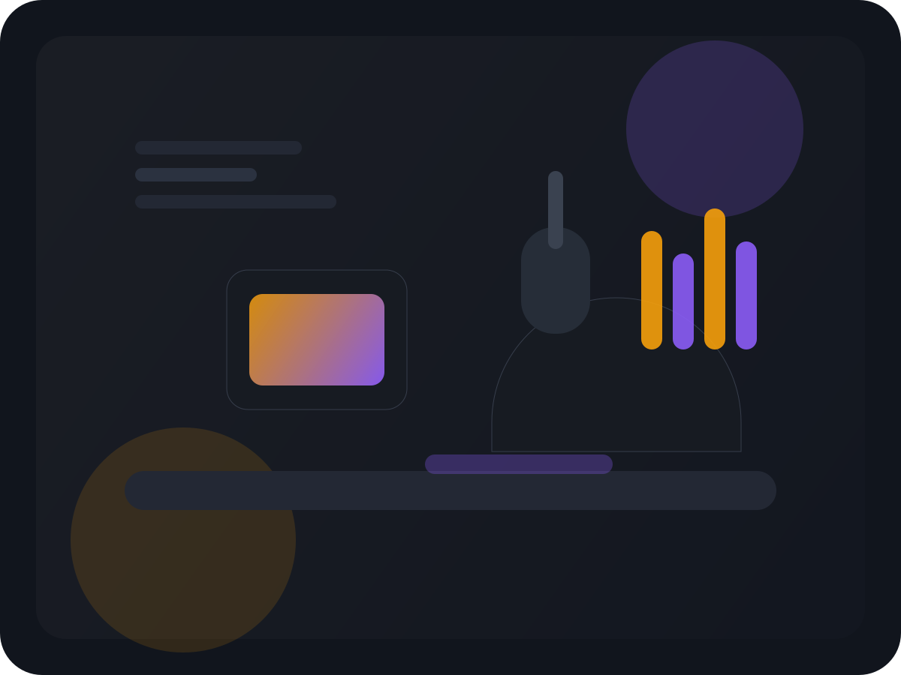

Темы
Медиа, цифровая культура, творческие процессы, продуктовое мышление и личная устойчивость.
Новый сезон 2026
Каждую неделю мы приглашаем авторов, предпринимателей, редакторов и исследователей, чтобы спокойно разобрать, как рождаются смыслы, решения и новые культурные сигналы.
О подкасте
«Точка сигнала» — это неспешные разговоры о работе с идеями, внимании, творчестве и технологиях. Мы не гонимся за новостной суетой: вместо этого собираем голоса людей, которые создают проекты, тексты, продукты и новые формы коммуникации.
Каждый выпуск помогает выстроить собственную оптику: понять, как мыслить глубже, где искать вдохновение и как не терять контакт с реальностью в эпоху перегруза.

Медиа, цифровая культура, творческие процессы, продуктовое мышление и личная устойчивость.
Глубокие интервью, сольные рефлексии и практические разборы кейсов без лишнего монтажа.
Новый выпуск каждую неделю, плюс спецэпизоды после живых встреч и конференций.
Для креаторов, редакторов, фаундеров и всех, кому важно понимать не только что делать, но и зачем.
Эпизоды
Список эпизодов и плеер связаны между собой: активный выпуск подсвечивается, а управление работает без стандартного браузерного интерфейса.
Гости выпусков
Перелистывайте карточки, чтобы увидеть, кто уже был в студии, и быстро перейти к связанному выпуску.
Подписка
RSS выделен как универсальный способ не пропустить новые выпуски в любом совместимом приложении.
Универсальная подписка для любого подкаст-приложения.
Apple PodcastsСлушайте в нативном приложении Apple и сохраняйте выпуски офлайн.
SpotifyПодпишитесь на обновления и возвращайтесь к любимым эпизодам в один клик.
YouTube MusicСлушайте через единый медиасервис вместе с плейлистами и релизами.
Яндекс МузыкаУдобный доступ для русскоязычной аудитории и персональных рекомендаций.
Pocket CastsПодходит тем, кто ценит продвинутые настройки, очереди и синхронизацию.
Обратная связь
Форма работает на фронтенде: проверяет обязательные поля, подсказывает ошибки и показывает успешную отправку без перезагрузки страницы.